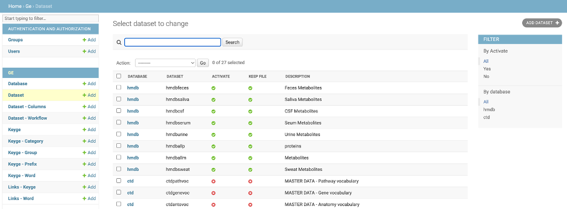
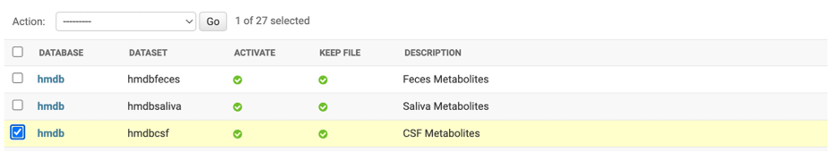
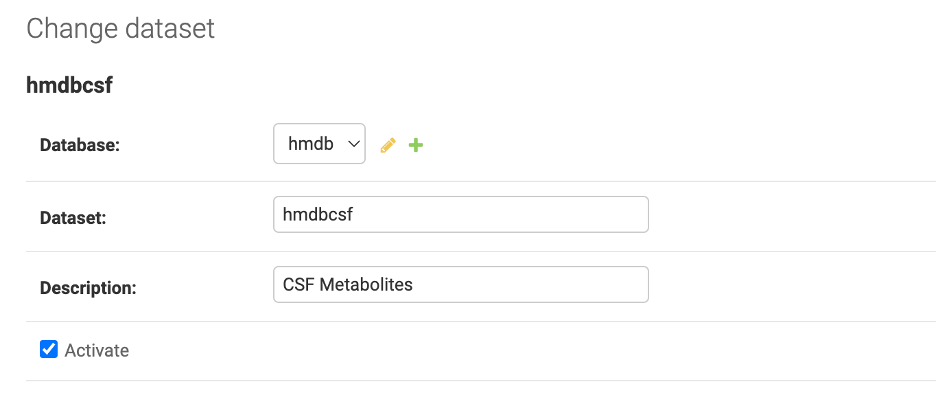
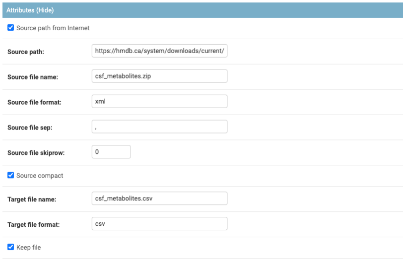
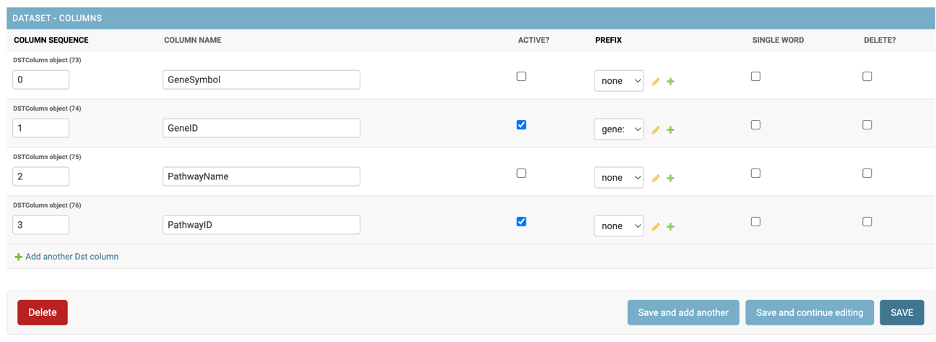

Dataset¶
- A DATASET record stores all information needed for external extraction and controls the links of related terms by the mapping process. The control of external data extraction occurs by DATASET. Each DATASET will consist of the fields:
DATABASE: Grouping of DATASET, controlling access authentication.
- DATASET: Abbreviation for DATASET identification
Description: Brief description of the purpose of DATASET
Enabled: Flag informing if the DATASET is active and will be considered in the ETL process
- Group Attributes: Fields to control extraction path and file type
Source path from Internet: Flag to route the extraction path. If enabled, it will be via HTTP and disabled. It will be considered as a local file path.
Source path: Path where the DATASET file is hosted
Source file name: name of the file with the original data
Source file format: file format with the original data. This information will be imported for conversion treatment to the data ingestion format in the ETL process. If compressed, inform only the compression format, type ZIP, GZ.
Source file sep: inform the type of file separator if any. For tabular division, use /n
Source file skip row: Inform the number of lines eliminated in the ETL process. Many files have structural information in their first lines that are not needed in the ETL process.
Source compact: Flag to control if the file is compressed. If not marked, it is considered an uncompressed file.
Target file name: Name of the file after unzipping
Target file format: File format after unzipping, this field will be the actual file format, type CSV, TXT
Keep file: Flag, if selected, will keep the file after data processing for future reference. It is essential to analyze the storage space consumption, as keeping the files may consume unnecessary space. New updates will overwrite existing files.
- Group Columns: Controls rules for handling the extracted data in a format compatible with the GE.db system. Consider only columns with standard MEsH NIH codes.
Column Sequence: Number of the column that receives the rule
Column Name: Column name to guide and help identify the applied rule
Active: a flag that informs if the practice is active
PREFIX: inform the prefix of the word that will be considered and added to the column information.
The inclusion of new data can be performed via the process db . On the command line:
$ python manage.py db --load dataset --path {path/filename}.csv
Example of the load file can be found in the folder src/load/md/dataset.csv
To list the DATASET already registered, type the command line:
$ python manage.py db --show dataset
To download the DATASET already registered, type the command line:
$ python manage.py db --download dataset --path {path/filename}.csv
To delete a specific DATASET, type the command line:
$ python manage.py db --delete dataset --dataset {DATASET Abbreviated Name}
To delete all DATASET Table. type the command line:
$ python manage.py db --truncate dataset
CAUTION: As GE.db is a correlational base with key integrity, all records linked to the deleted data will also be deleted, which includes Rules and KEYGELINKS information
DATASET Web Interface¶
Through IGEM’s friendly web interface, it will be possible to carry out DATASET management activities.
Activate the IGEM web service if you have not already done so. Go to the /src/ folder and type the command line:
$ python manage.py runserver

If it returns a port error, you can specify a different port:
$ python manage.py runserver 8080
Access the address in the link provided in Starting development server. Significantly, this address may vary depending on the initial settings performed during installation.
After user authentication and on the initial administration screen, select an option Dataset.

On the Dataset screen, we will have options to consult, modify, add and eliminate DATASET.
Filter DATASET
- For the DATABASE, we will have two filter locations:
First located at the top of the DATABASE List screen where we can search broadly.
Second on the right sidebar, being able to select by category of DATABASEs.

To consult, click a desired DATASET.
Add DATASET
- To add new DATABASE, we will have three different ways:
by the
+ Addbutton on the left sidebar.Through the
ADD DATABASE +button in the right field of the DATABASEs list.Via the
Save and add anotherbutton located within a DATABASE record.

The DATASET interface is divided into three parts with each one performing a different activity in the ETL (Extraction, Transformation and Load) process of external data to IGEM.
PART 1
It has fields for identifying the DATASET, among them we will have which DATABASE the DATASET belongs to, an abbreviation that will identify the DATASET in processes and queries, a description and a flag for activating or not the DATASET.
If the Activate FLAG is not selected, the DATASET will not perform new extraction of external data, but all data already loaded will continue to be available for queries
PART 2
The second part will be composed of the attributes to make the connection with external sources and format of the extracted data.
Each field has already been detailed at the beginning of this session.
PART 3
The third part stores the transformation rules that the IGEM system needs to interpret the input data and how to handle each column.
If the input files are not in tabular format, as in the case of files with XML extension, the COLLECT process will transform into tabular and keep a new file in the PSA folder as detailed in the Collect
The sequence of columns does not need to be in order, however it will be necessary to identify the first column with the number 0 and so on.
If a column is not informed, the system will understand it as a basic rule and process the column as detailed in the process Prepare
To delete a column rule, check the DELETE? On the desired line and save the DATASET.
To add a new column rule, select the + Add another DST column button
The column name will be a header identifier used in the file generated during the ETL process. This file can be kept for future queries and Data Lake projects for example, as it has already passed through a normalization layer.
The Active field tells the ETL process to read and handle the source column. If the line is not marked, it will be discarded during the PREPARE process and not going through MAPREDUCE.
Important to balance workload, storage space, and other factors before keeping a column active. Many columns are unnecessary information for the purpose of term mapping and would not make sense to keep them active.
The prefix field adds an identification to fields composed only of codes: For example, we will have a column with a code of a Numeric Gene only, for the IGEM to identify that this sequence of numbers is a Gene, we add a prefix that differentiates it from other types of also numerical information.
It is important to maintain a synchronism between the prefixes and the registration of Keyge and Words so that the MAPREDUCE process can identify and ingest the terms found into the GE.db base.
We can perform two maintenance operations on the prefixes using the change buttons and quickly add a new prefix on the DATASET screen without having to leave the register. Prefixes are also treated as master data within IGEM.
The SINGLE WORD option field has the function of informing the ETL process if this column is composed of a single word and does not need to go through the process of breaking up and identifying terms. This makes the process faster and reduces memory consumption during the DATASET ETL. When we have selected a prefix for the column, the SINGLE WORD will have no function, because with the prefix it is assumed that it is a KEYGE without the replacement processing by the KEYWORD.
Save DATASET
- On the next screen, we have all the DATASET fields open for modifications. To modify, change the desired information and select one of the three button options:
Save and add another: Will save the changes and open a blank DATASET screen to add a new DATASET record.Save and Continue editing: Will save the changes and continue on the DATASET screen.Save: Will save the changes and return to the screen with the list of DATASET.
Delete DATASET
The DELETE button will permanently delete the DATABASE record.
Caution: when deleting a DATABASE, the system will also delete all records dependent on that DATABASE, which include DATASETs, Parameterizations of transformations and KEYLINKS
Deletion can also be performed en bloc. On the DATABASE List screen, select all the DATABASE you want to delete, choose the Delete Selected Database action and click on the GO button.
Be careful, this elimination operation will be definitive for the DATABASEs and for all other records dependent on it, as already explained.

History Change
In the History button, we can consult all the modifications carried out in the DATABASE, this function will be important to track modifications and audit the process.